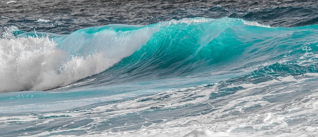

Big wave surfing

The biggest waves in the world
- Nazaré, Portugal
- Maui, Hawaii
- Tahiti, French Polynesia
- Tasmania, Australia
- Half Moon Bay, California
The biggest waves in the world

Big wave surfing is a discipline within surfing in which experienced surfers paddle into,
or are towed into, waves which are at least 20 feet
(6.2 m) high, on surf boards known as "guns" or towboards.
[1] Sizes of the board needed to successfully surf these waves vary by the size of the wave
as well as the technique the surfer uses to reach the wave. A larger, longer board allows a rider to paddle fast enough to catch the wave and has the
advantage of being more stable, but it also limits maneuverability and surfing speed.
In 1992, big wave surfers such as Buzzy Kerbox, Laird Hamilton and Darrick Doerner introduced a cross over sport called tow-in surfing.
[4] While many riders still participate in both sports, they remain very distinct activities.
This type of surfing involves being towed into massive
waves by jet ski, allowing for the speed needed to successfully ride. Tow-in surfing also revolutionized board size, allowing surfers to trade in their
unwieldy 12 ft. boards in favor of light, 7 ft boards that allowed for more speed and easier maneuvrability in waves over 30 ft (10 meters). By the end
of the 1990s, tow in surfing allowed surfers to ride waves exceeding 50 ft (15 meters).